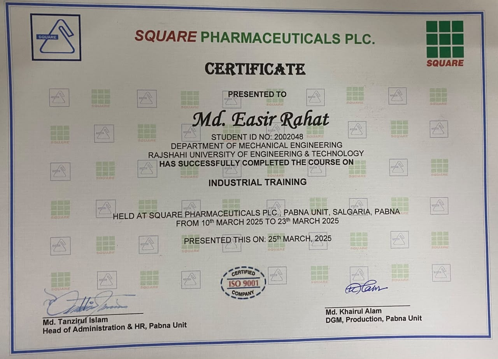
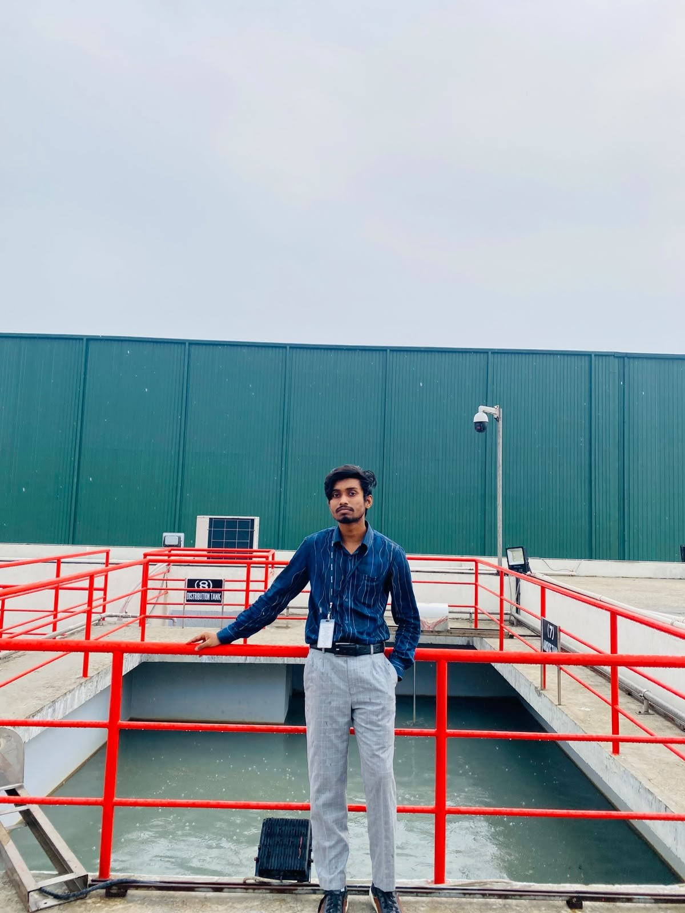
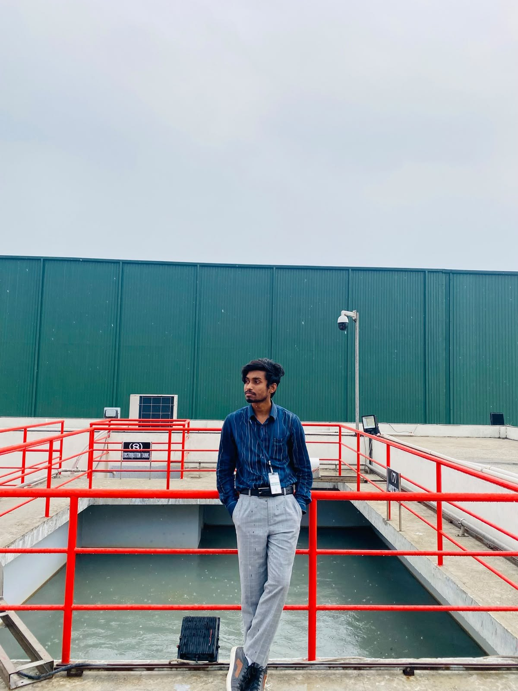
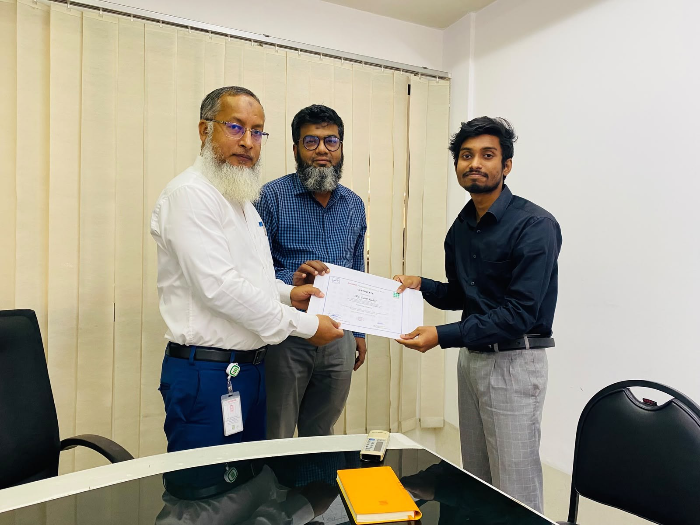

Internship
A two-week industrial attachment with the Engineering Department at Square Pharmaceuticals PLC, Pabna Unit.
Internship

10–23 Mar 2025 · Square Pharmaceuticals PLC, Pabna Unit
Industrial Trainee — Engineering Department
ME 4120 Industrial Training, supervised by Md. Khairul Alam, DGM (Production Unit).
This was a 2-week industrial attachment with the Engineering Department at Square Pharmaceuticals PLC's Pabna Unit, submitted as ME 4120 coursework. Rather than sitting with one section, I rotated across the plant's utility and support systems — the areas that keep a pharmaceutical facility running rather than the visible production lines themselves. That included the HVAC system serving the cleanrooms and warehouses (air handling units, chillers, dehumidifiers, and the Building Management System that automates them), the compressed air network (17 compressors across the three formulation units), and the 11/0.4kV substation stepping down power from the plant's own 9MW captive gas-turbine plant to the 400V used on the floor.
I also spent time with the water systems — purified water and Water for Injection (WFI), each tested against specific chemical and microbial limits — and the nitrogen and oxygen generation plants, which use molecular-sieve adsorption (CMS for nitrogen, GMS for oxygen) rather than cryogenic separation. On the quality side, I followed how Quality Control tests raw materials, in-process samples, and finished products against BP/USP/EP standards, and how the calibration schedule keeps everything from pH meters to load cells within tolerance. In the final report, I raised a few observations of my own — including that packaging still relies heavily on manual operations where auto-cartooning machines could improve throughput, and that raw material and packaging material warehouse capacity is becoming a constraint as production scales up.


